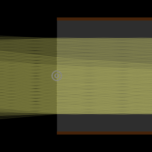

- 「模組」是一個目前處於實驗階段的功能，其透過將本模擬器中現有的工具所建立的物件進行組合、特化或重新參數化，來製作新的工具。
- 匯入的模組將顯示為「其他」類別中的工具。請選擇並依照控制點順序點擊空白處（參見「規格」）。
- 匯入的模組將嵌入於場景的資料中，所以當原作者更新時並不會自動更新。

控制點順序
- 透鏡的第一個端點
- 透鏡的第二個端點
N_slice: 切片數量refIndex: 透鏡的折射率

連續光譜光源 (ContSpectrum)
Yi-Ting Tu
具有均勻連續光譜的光源，以指定的步長離散化。只在「模擬色彩」模式中運作。
控制點順序
- 光線的起點
- 決定光線的方向
min: 波長最小值step: 波長的步長max: 波長最大值brightness: 總亮度

圓形光源 (CircleSource)
Yi-Ting Tu
將一系列均勻的180度點光源置於圓周上所形成的光源。
控制點順序
- 該圓形的圓心
r: 該圓形的半徑N: 點光源的數量brightness: 總亮度

控制點順序
- 干擾箔的左上角
- 干擾箔的右下角
N: 干擾箔中鏡子的數量L: 鏡子的長度

控制點順序
- 第一個透鏡的中心點
- 第二個透鏡的第二個點
- 決定共同焦點的位置
-
-

光線中繼 (RayRelay)
Stas Fainer, Yi-Ting Tu
一系列相同的理想透鏡，焦距為 \(f\)，間距為 \(d\)。若且唯若 \(d\leq 4f\) 時，可以保證光線軌跡不會發散。此作品集範例的模組化版本。
控制點順序
- 第一個透鏡的第一個端點
- 第一個透鏡的第二個端點（應與第一點有相同的 \(x\)）
f: 透鏡的焦距d: 透鏡之間的距離N: 透鏡的數量

光纖 (OpticalFiber)
josephernest, Yi-Ting Tu
指定核心和包層折射率的線狀光纖。
控制點順序
- 光纖的第一個端點
- 光纖的第二個端點（應與第一個點有相同的 \(y\)）
X: 核心的厚度Y: 包層的厚度n_1: 核心的折射率n_2: 包層的折射率
客製化
您可直接在本網頁程式中使用內建的 JSON 編輯器製作或客製化模組。請參見教學。將匯入的模組客製化僅會影響目前的場景。貢獻
歡迎您貢獻項目至以上的清單。請將項目加入到此資料夾中並建立 pull request。如果您對 GitHub 不熟，也可直接將包含模組的檔案傳送至ray-optics@phydemo.app。